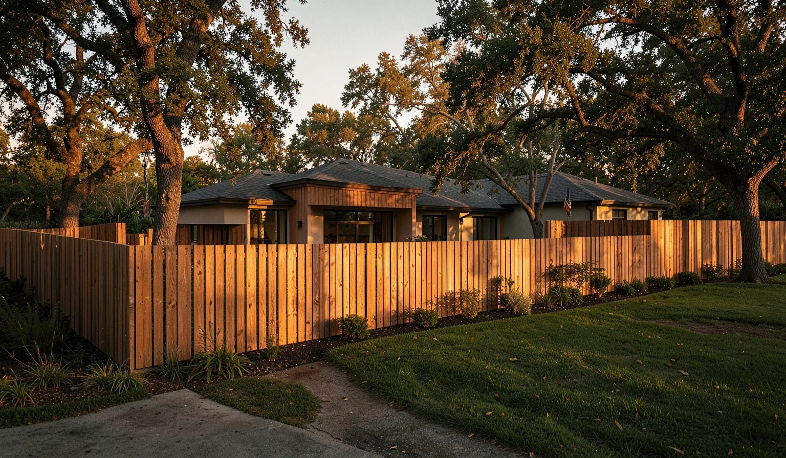
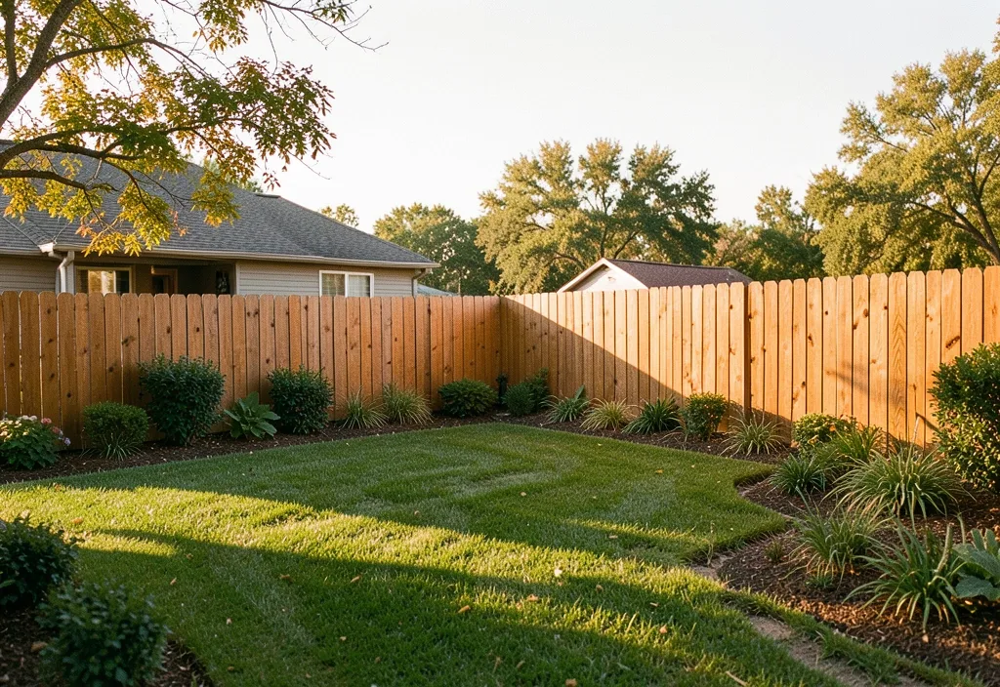
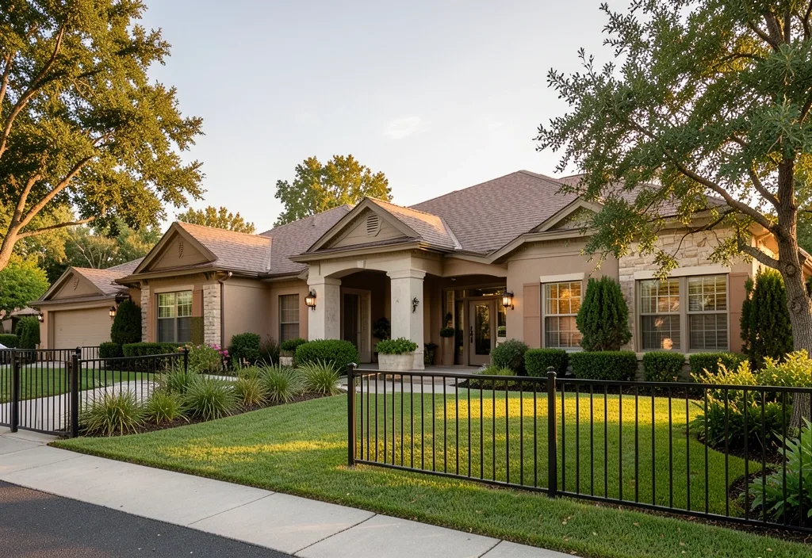
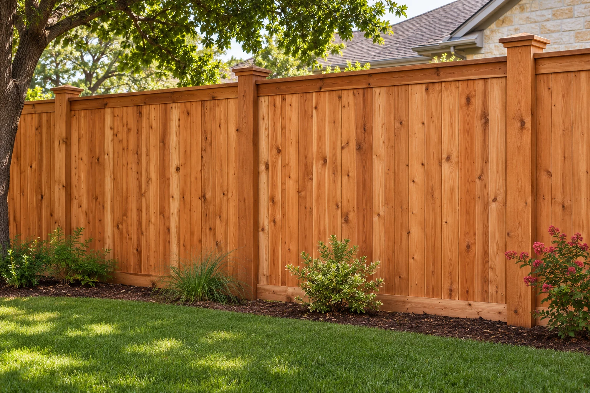
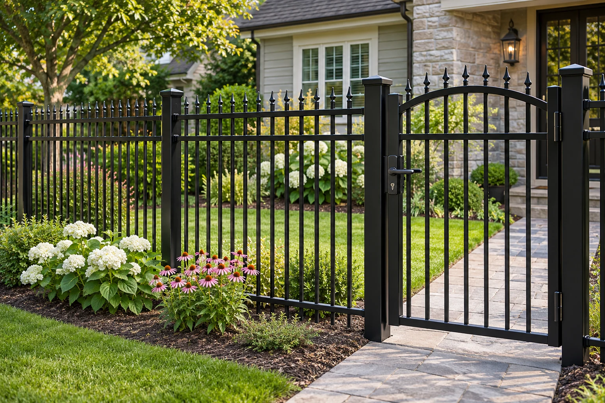
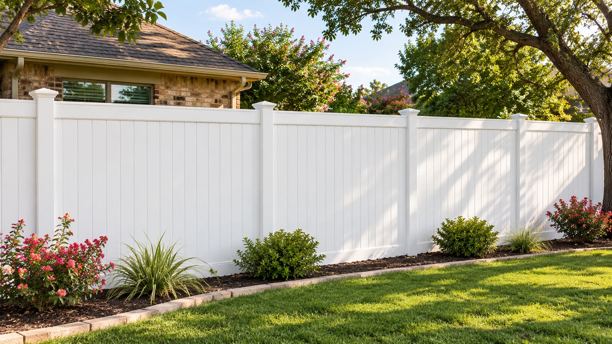
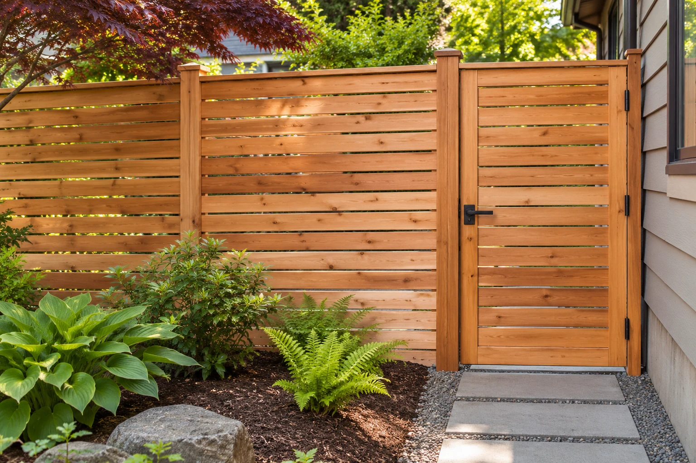

01 / RESIDENTIAL
At-home privacy
Create a quieter, more secure outdoor space with a fence tailored to your home and everyday life.
Call (210) 555-5555
A well-made fence does more than mark a line. It brings privacy, peace of mind, and a more considered finish to the places you call yours.
The right fence can make a home feel more private, a property more secure, and an outdoor space more complete. Getting it right starts with the people who build it.
Texas Fencing is an independent information and referral resource for San Antonio-area homeowners and businesses. We do not install fences. Independent providers confirm availability, pricing, and services for your property.
Plan your provider conversation
Made for the way you liveEvery property has its own purpose. Ask a fencing provider about suitable materials, project scope, and costs before making a choice.
Create a quieter, more secure outdoor space with a fence tailored to your home and everyday life.
Call (210) 555-5555Well-considered perimeter fencing designed to protect your property and support the way you work.
Call (210) 555-5555A timeless, versatile look that lends character, definition, and a little more seclusion.
Call (210) 555-5555Clean lines and durable materials bring dependable security with an open, refined feel.
Call (210) 555-5555Request a written estimate that explains materials, fence length and height, gate details, removal of old fencing, schedule, and warranty terms. Confirm who handles property boundaries and any applicable approvals.

Illustrative inspiration images, not projects completed by Texas Fencing.




A useful first conversation starts with your ZIP code, property type, preferred materials, approximate fence length, and gate needs. Independent providers can explain what they offer.
Tell us about your property, your needs, and what you have in mind.
Ask the provider to compare suitable styles, materials, pricing, and maintenance needs.
Review the written scope, provider credentials, and terms before authorizing installation.
Our geographic focus includes San Antonio, Alamo Heights, Leon Valley, Castle Hills, Converse, Live Oak, Universal City, Schertz, and nearby communities. Providers must confirm service availability for your ZIP code; this list is not a coverage guarantee.
Discuss your project · (210) 555-5555Call about your San Antonio-area fencing project. Ask the answering provider to confirm your ZIP code, project fit, and next steps.
Call (210) 555-5555